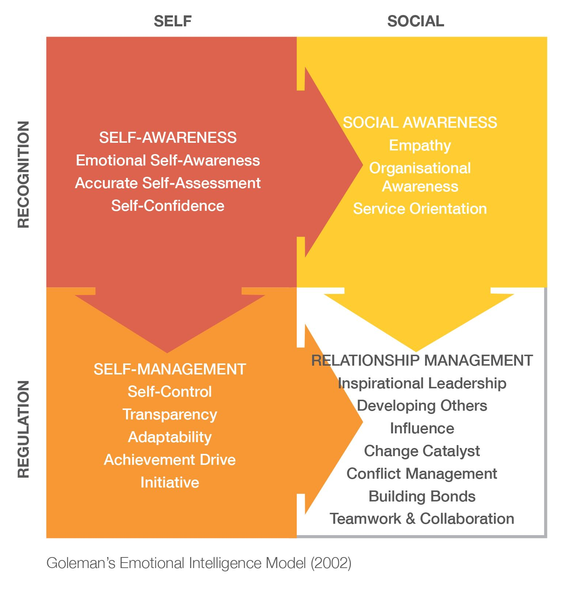

Emotional intelligence exploration
Monday, 09 September 2024
What is emotional intelligence?
Emotional intelligence (EI) is the ability to recognise, understand, and manage emotions in ourselves and others.
One of the academic pioneers of EI described it this way:
…emotional-social intelligence is an array of interrelated emotional and social competencies and skills that determine how effectively individuals understand and express themselves, understand others and relate with them, and cope with daily demands, challenges and pressures.
- Reuven Bar-On, 2010
EI can affect your physical health, mental health, relationships, social intelligence, and work performance. EI is most often defined by four attributes:
- Self-awareness: Helps you recognise and understand your emotions in the moment. Having a connection with your changing emotional experience is critical to understanding how emotions influence your actions and thoughts. To build self-awareness you need to connect with your core emotions, accept them, and be comfortable with them.
- Self-management: Is about making constructive decisions about your behavior. By staying emotionally present you can get upsetting information and not let it override your thoughts and self-control. Rather, allowing you to manage your emotions in healthy ways, take the initiative, follow through on commitments, and adapt to changing circumstances.
- Social awareness: The core skill in social awareness is empathy. Knowing what people are feeling and thinking without them telling you in words. Social awareness requires your presence in the moment. Attending to this focus on others also helps you gain deeper insight on your own emotional being, including your values and beliefs.
- Relationship management: Having excellent relationship skills is a central characteristic of good EI. This includes having social awareness of others and what they are experiencing. This helps make relationships more effective, fulfilling, and productive. Many experts believe EI is strong determiner of life success.
The emotional intelligence model

How is EQ different to IQ?
Intelligence quotient (IQ) is designed to assess human intelligence. It is based on a series of standardized tests that measure aspects of human intelligence such as verbal comprehension, reasoning ability, and working memory. Modern IQ tests transform raw scores into a normal distribution with a mean (average) score of 100.
Emotional quotient (EQ) is another name for the discussed emotional intelligence (EI). As noted, it conversely describes someone’s ability to recognise, understand, and manage emotions in ourselves and others. IQ is an older concept than EQ/EI. There are various ways to try and measure EQ/EI.
Why is EQ important?
There is good evidence that having a good EI supports workplace performance and life success. More so than IQ. Although this can depend somewhat on the context and how success is defined.
Individuals with good EI can for example navigate social complexities, build strong relationships, and make broadly thoughtful decisions i.e., account for the emotional and rational. EI contributes to improved communication, conflict resolution, and overall wellbeing.
As the noted EI author Daniel Goleman said:
If your emotional abilities aren’t in hand, if you don’t have self-awareness, if you are not able to manage your distressing emotions, if you can’t have empathy and have effective relationships, then no matter how smart you are, you are not going to get very far.
- Daniel Goleman
Key references
Wikipedia Emotional intelligence.
Wikipedia Intelligence quotient.
Harvard Busines School Why emotional intelligence is important in leadership.